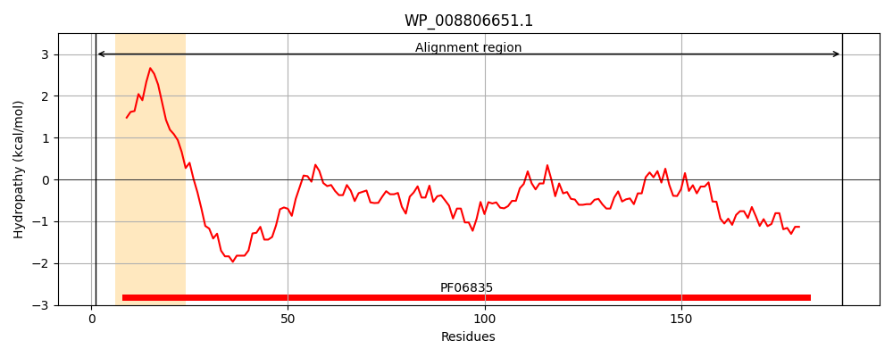
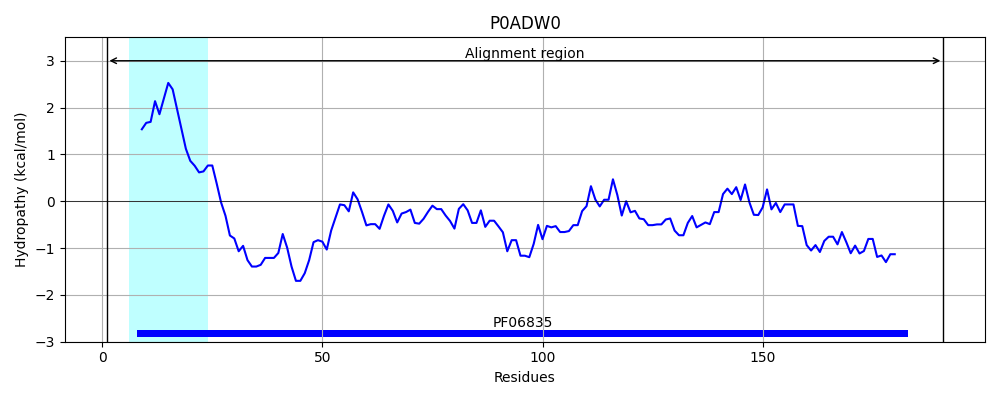
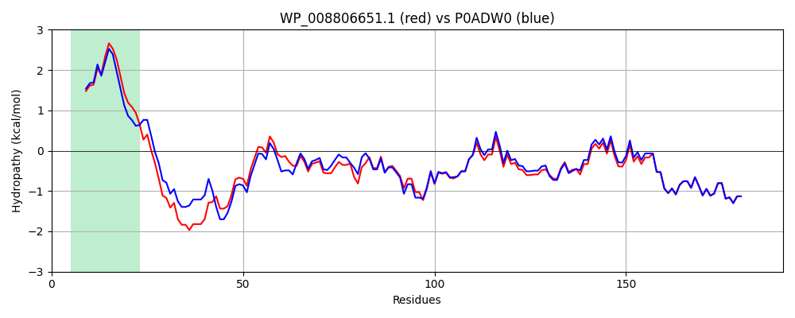

Hit Accession: P0ADW0
Hit TCID: 1.B.42.1.2
Hit Description: gnl|BL_ORD_ID|8761 gnl|TC-DB|P0ADW0|1.B.42.1.2 Lipopolysaccharide export system protein LptC OS=Escherichia coli O6:H1 (strain CFT073 / ATCC 700928 / UPEC) GN=lptC PE=3 SV=1
Mach Len: 191
e:0.000000
Query TMS Count : 1
Hit TMS Count: 1
TMS-Overlap Score: 0.950000
Predicted Substrates:CHEBI:6494;lipopolysaccharide
BLAST Alignment:
Score: 865 , Bit scores: 337 bits, E-value: 3.0e-120, Alignment length: 191, Percentage identity: 85
Query: 1 MSKTRRWVIILLSLLALILIGLNLANTDDTAQPEVNPNDPTYKSEHTDTVVYSPEGALSYRLIAEHVEYFSDQEVSWFTKPVMTTFDTNKVPTWSIRADKAKLTNDRMLYLYGHVEVNALAPDSQLRKITTDNAQINLVTQDVTSDDMVTLYGTTFNSSGLKMRGNLRSKNAELIEKVRTSYEIQNKQTQP 191
MSK RRWVII+LSL L++IG+N+A DDTAQ VN NDPTYKSEHTDT+VY+PEGALSYRLIA+HVEY+SDQ VSWFT+PV+TTFD +K+PTWS++ADKAKLTNDRMLYLYGHVEVNAL PDSQLR+ITTDNAQINLVTQDVTS+D+VTLYGTTFNSSGLKMRGNLRSKNAELIEKVRTSYEIQNKQTQP
Sbjct: 1 MSKARRWVIIVLSLAVLVMIGINMAEKDDTAQVVVNNNDPTYKSEHTDTLVYNPEGALSYRLIAQHVEYYSDQAVSWFTQPVLTTFDKDKIPTWSVKADKAKLTNDRMLYLYGHVEVNALVPDSQLRRITTDNAQINLVTQDVTSEDLVTLYGTTFNSSGLKMRGNLRSKNAELIEKVRTSYEIQNKQTQP 191 | Protein Hydropathy Plots: |
|---|
|  |  |
Pairwise Alignment-Hydropathy Plot:
|
|---|
|  |